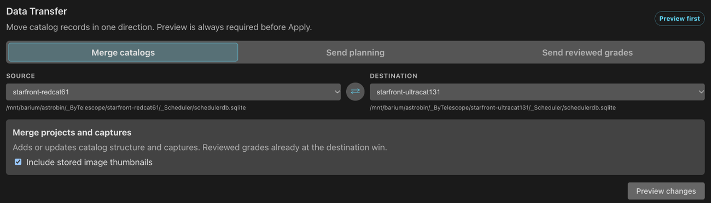

Rejects and Database Sync
Move rejected frames out of the folders your stacking tool reads, and copy captures, plans and grades between two catalogs: two database files, or two PSF Guard servers.
A desktop app that opens the telescope's database directly needs no sync.
Archive rejected files
--dry-run firstEvery move is recorded, so a restore puts each file back where it was.
Stacking tools such as PixInsight load every file under your lights
folder, rejected frames included. move-rejects moves each
rejected frame and its sidecars (.json and .txt by
default) into a REJECT/ folder just below the project folder, and
records where each came from:
# Move rejects to <image_dir>/<Project>/REJECT/... with their sidecars.
# Re-runs skip frames already moved.
psf-guard move-rejects --db my-db --dry-run
psf-guard move-rejects --db my-db
# Un-reject frames in the UI, then bring them back
psf-guard restore-rejects --db my-db # only frames no longer Rejected
psf-guard restore-rejects --db my-db --all # everything in the archive- Recorded. Each move is saved in a
psf_guard_archivetable in the database, with a manifest file in each archive root for recovery. - Reversible.
restore-rejectsbrings back frames no longer graded Rejected;--allbrings back everything, and--image-idor--guidone frame. It never overwrites: a file whose original path is taken comes back with a.restoredsuffix. - Calibrated copies move too. A rejected frame's calibrated and registered copies, such as WBPP's, move into the archive beside their own folders and come back on restore. A copy that cannot be found, or would overwrite something, is listed and left where it is.
- Still searchable. Archived frames stay indexed in the
grader, since the index covers the
REJECT/folders. - Configurable.
--reject-segment(defaultREJECT),--reject-depth(default 1) and--sidecar-extschange the layout, as does areject_archiveblock on the database's registry entry. A FITS or XISF file is never taken as a sidecar: it has its own grade.
filter-rejected command remains for its statistical
flags.
Sync two database files
Grade on one machine while the telescope keeps capturing on another. Sync
copies chosen state between two Target Scheduler databases, named by
registry slug or .sqlite path, and matches rows by their stable
GUID (schema 22 or later).
Data Transfer in Settings

Open Settings → Sync. Data Transfer takes a Source and a Destination and offers three directions:
| Direction | Copies |
|---|---|
| Merge catalogs | Projects, targets, plans and captures. Reviewed grades already at the destination win. Include stored image thumbnails copies Target Scheduler's thumbnails too. |
| Send planning | Projects, targets, templates, exposure plans and rule weights. Captures, counts and grades at the destination stay. |
| Send reviewed grades | Grades and reject reasons. Pending grades stay out by default. |
Each direction makes a preview on the server first. The preview keeps a frozen copy of the source and comes back after a page reload. Apply refuses if the destination changed since the preview. The Sync tab needs database management.
Sync from the command line
# Captures and structure FROM the telescope INTO your copy.
# Your reviewed grades stay; new frames arrive with the telescope's grade.
psf-guard sync pull --from telescope.sqlite --to my-db --dry-run
# Edited projects, targets, templates, plans and rule weights back TO the telescope.
# Its captures, counts and grades stay.
psf-guard sync planning --from my-db --to telescope.sqlite --dry-run
# Your grading decisions back TO the telescope (one way, source wins).
psf-guard sync grades --from my-db --to telescope.sqlite --dry-runsync pullcopies projects, targets, templates, exposure plans, rule weights and captured images. The telescope wins for structure. An existing frame keeps its local grade unless that is Pending, in which case it takes the telescope's.--no-image-dataskips the thumbnails.sync planningcopies project and target settings, templates, exposure plans and rule weights. It never touches capture history, frames or grades. New plans start with no frames taken.sync gradescopies grades and reject reasons.--status,--projectand--targetnarrow what it sends.
All three open the source read-only, refuse when source and destination
are the same file, run in one transaction, and report matched, changed,
unchanged and unmatched rows. Each takes --dry-run and
--project.
How rows match
| Row | Matched by | Result |
|---|---|---|
| Project, target, template, plan | GUID | The source wins in the direction you chose |
| Captured frame | GUID | Inserted, or its capture fields updated |
| A frame PSF Guard catalogued itself (import or upload) before the telescope's row arrived | Target, file name, and capture time within 2 s | Updated in place: it takes the telescope's GUID and keeps a reviewed grade |
| A frame catalogued from its calibrated copy before the raw file arrived | Target, capture time, exposure and filter | Updated in place: the raw file becomes the light, and a reviewed grade stays |
| Reviewed grade during a merge | GUID | The destination wins |
| Pending grade during a merge | GUID | Filled from the source |
| Grade push | GUID | The source grade and reason win |
| Row only at the destination | Kept | |
| Duplicate or empty GUID | Skipped and reported | |
| Same name or coordinates, another GUID | Warned about, never merged |
Staged previews
Settings → Sync → Staged previews lists every transfer waiting on the server, including those the N.I.N.A. plugin sent: the catalog, operation, source, change counts and expiry. Expand What would change for the field changes, grade transitions, reject reasons, and the projects, targets, plans or frames to be inserted or updated, up to 400 lines.

- Apply writes the reviewed changes to the destination.
- Refresh compares the saved source with the destination again, after the destination changed.
- Discard deletes the preview and changes nothing.
Nothing changes until you click Apply. The server builds a large preview in the background while the page polls for progress, so a reverse proxy never times out.
Sync with another PSF Guard
One PSF Guard can sync with another over HTTP: no shared file system, and
no copying a live SQLite file. The peer must allow it. On the peer, edit the
catalog under Settings → Databases, generate a
Remote API key, and tick Accept remote scheduler
sync. A server with no Settings grants the same with a
[[remote_sync]] block in its config file; see
Configuration.
Then, on this server, open Settings → Sync → Remote PSF Guard:
- Click Add peer, enter its Name, Base URL and API key, and click Save peer. The key stays on the server and is never sent back to the page.
- Click Test connection.
- Choose Pull from peer, Send planning or Send grades, and the Local catalog.
- Click Preview changes, read the counts, then Apply this preview.
The command line does the same, for a terminal or a cron job:
psf-guard sync remote --direction pull \
--local review --peer https://telescope.example:3000 --token-file key.txt--direction takes pull,
push-planning or push-grades. Every direction
previews first. A push is reviewed by the peer, which writes nothing until
the preview it issued is applied. --dry-run stops after the
preview. push-grades sends only reviewed grades unless you pass
--all-grades. The key comes from --token-file, then
PSF_GUARD_SYNC_TOKEN, then --token; an argument is
visible to every process on the machine.
The peer appends every remote action, refusals included, to
remote-sync-audit.jsonl in its cache folder.
Run the whole loop
# 1. Bring the night's captures over from the telescope
psf-guard sync pull --from telescope.sqlite --to my-db
# 2. Screen the night and write supported rejections
psf-guard screen-fits /images/2026-06-30/LIGHT --regrade-db my-db
# 3. Review borderline frames in the grader
psf-guard server
# 4. Archive rejects out of the stacking tree
psf-guard move-rejects --db my-db
# 5. Send plans and final grades back so the scheduler re-captures
psf-guard sync planning --from my-db --to telescope.sqlite
psf-guard sync grades --from my-db --to telescope.sqlite